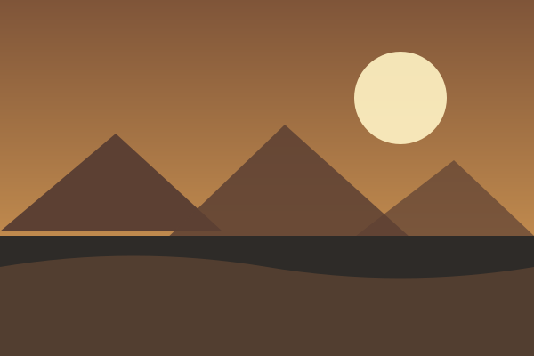
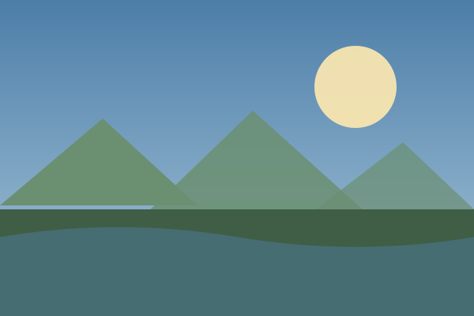
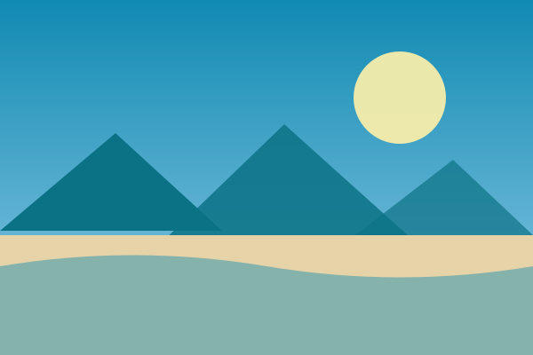
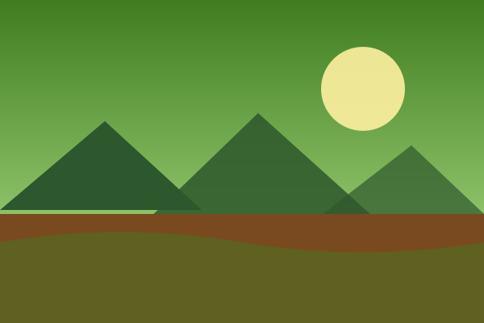

Nine illustrated views of Vietnam, from the pine hills of Da Lat to the limestone islands of Ha Long Bay. The gallery starts as a single column on a phone, becomes a two column grid with circular frames on a tablet, and turns into a large screen layout where every third frame becomes a wide banner.
The page is built mobile first and also reacts to your own settings: if your device asks for dark colours the frames switch to a dark background with light text, and if you prefer reduced motion the smooth scroll behaviour is switched off.



